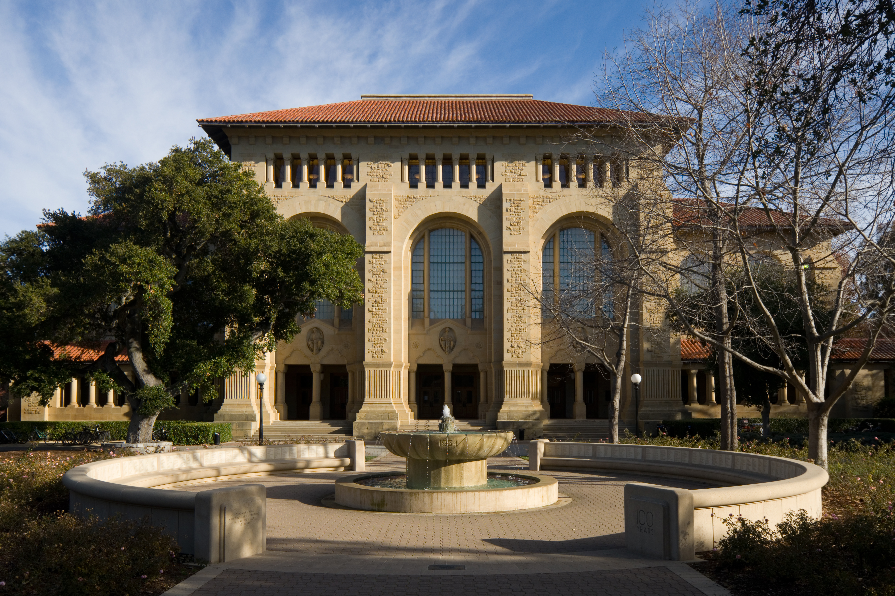

On Campus

Prayer Spaces
A few places on campus where you can pray between classes.
Old Union

Green Library
Stanford Law School
Packard
Graduate School of Education
Stanford Hospital
Dining
Halal Food on Campus
In all Stanford dining halls, food options will have a halal label. Mostly, chicken and beef will be labeled halal. In cases where it's not, please check with the dining hall staff.
More information can be found on the R&DE website: Eat Well at Stanford.
Academics
Related Classes
Stanford also offers Islam-related classes you can take for credit.
Support
Religious Accommodations
If you're facing a conflict between academic deadlines and religious observance, Stanford's Office for Religious & Spiritual Life (ORSL) can help. Reach out to them directly to arrange religious accommodations.